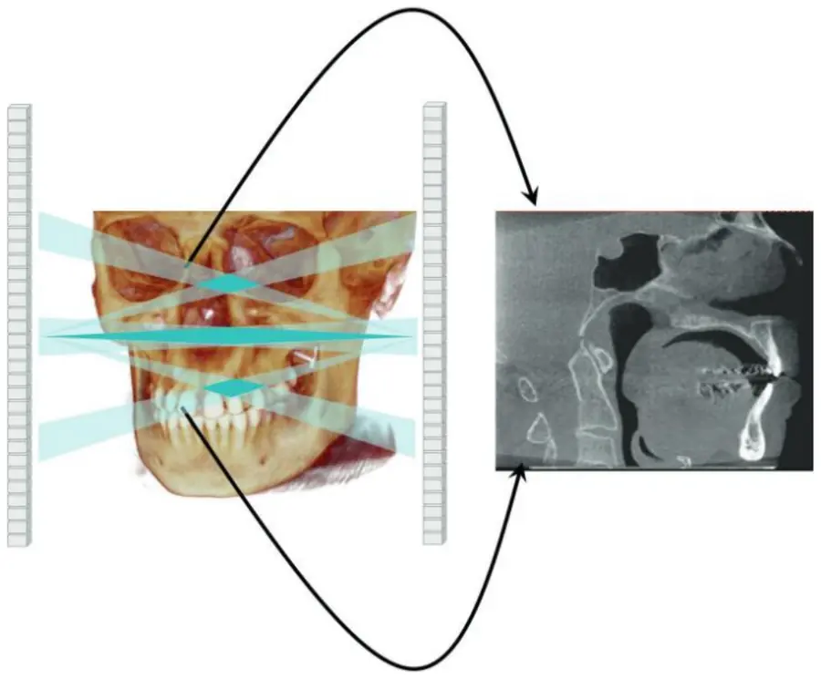
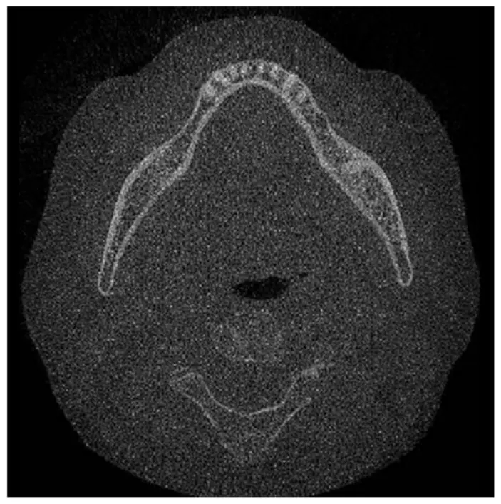

نسخه استخراجشده؛ ترجمه یا تأیید علمی انجام نشده است. وضعیت: captured
سه آرتیفکت ذاتی از خود فیزیک CBCT میآیند — «هندسهی پروجکشن پرتو CBCT، کمانهای چرخشی کاهشیافته، و روشهای بازسازی تصویر» این سه را میسازند: پراکندگی، میانگینگیری حجم جزئی، و اثر پرتو مخروطی.

۱) پراکندگی — «از فوتونهایی میآید که پس از برهمکنش با ماده از مسیر اصلیشان منحرف شدهاند. چون CBCT از آشکارسازهای سطحی استفاده میکند، فوتونهای پراکنده را میگیرد و این به تخریب کلی تصویر یا «نویز کوانتومی» در مقایسه با MDCT میانجامد.» و نشانهاش: «آرتیفکت خطخطی، شبیه آرتیفکت سختشدگی پرتو».
۲) میانگینگیری حجم جزئی — این یکی «ویژگی هر دو MDCT و CBCT» است. «وقتی رخ میدهد که اندازهی وکسل انتخابی بزرگتر از اندازهی جسم مورد تصویربرداری باشد.» یک مثال: «وکسلی با ضلع ۱ میلیمتر ممکن است هم استخوان و هم بافت نرم مجاور را در خود داشته باشد. در این حالت، پیکسل نمایشدادهشده نمایندهی هیچکدام نیست بلکه میانگین مقادیر روشنایی بافتهای مختلف میشود.»
و نشانههایش: «مرزها در تصویر ممکن است ظاهر پلهای یا یکنواختی سطوح شدت پیکسل پیدا کنند.» و کجا رخ میدهد؟ «در نواحیای که سطوح بهسرعت در جهت Z تغییر میکنند، مثلاً در استخوان تمپورال.» و در بالین: «ممکن است بهصورت گسست جزئی یک لایهی نازک استخوان کورتیکال دیده شود — مثلاً دیوارههای استخوانی سلولهای اتموئید یا استخوان تمپورال.» راهحل: «انتخاب کوچکترین وکسل اکتساب».
۳) اثر پرتو مخروطی — «بهویژه در بخشهای پیرامونی حجم اسکن». علتش «واگرایی پرتو هنگام چرخش گرد بیمار در صفحهی افقی» است. نتیجه: «اعوجاج تصویر، آرتیفکت خطخطی، و نویز پیرامونی بیشتر.»
و منطق هندسیاش زیباست: دادهی بهینه در مرکز بیشینه است و در پیرامون بهمراتب کمتر؛ و درونیابی الگوریتم بازسازی برای جبران دادهی ناکافی، یک آرتیفکت «V» پیرامونی با نویز افزوده، اعوجاج، و کنتراست کاهشیافته میسازد.
و راهحل بالینیاش ساده است: «این اثر با قرار دادن ناحیهی مورد نظر در صفحهی افقی پرتو کاهش مییابد.»
۱) کمنمونهبرداری و الگوی موآره — «وقتی رخ میدهد که پروجکشنهای پایهی بسیار کم برای بازسازی فراهم شود یا کمانهای چرخشی ناقص باشند.» نتیجه: «ثبت نادرست، لبههای تیز، و تصاویر نویزیتر در نتیجهی الیاسینگ، که بهصورت خطخطیهای ظریف در تصویر ظاهر میشود» — بهویژه در پیرامون، با ظاهر مشخص «موآره».

و یک نکتهی تصمیمگیری مهم: «چون افزایش زمان اسکن (شمار پروجکشنهای پایه) یا کاهش کمان چرخش به افزایش یا کاهش متناسب پرتوگیری میانجامد، اهمیت این آرتیفکت باید در نسبت با اطلاعات تشخیصی سنجیده شود.»
۲) آرتیفکت حلقهای — «آرتیفکتهای مربوط به اسکنر معمولاً بهصورت خطخطی دایرهای یا حلقوی در صفحهی محوری، مرکز شده حول محل محور چرخش، ظاهر میشوند» و از «نقص در آشکارسازی اسکنر یا کالیبراسیون ضعیف» میآیند. سازوکارش: «هر یک از این مشکلات به یک قرائت پیوسته و تکراری در هر موقعیت زاویهای آشکارساز میانجامد، که آرتیفکت دایرهای میسازد.»
۳) آرتیفکت کانتور دوگانه از ناهمترازی — «ناهمترازی منبع پرتو با آشکارساز، آرتیفکت کانتور دوگانه میسازد، شبیه آنچه حرکت بیمار میسازد.» و علتش تدریجی است: «استفادهی مکرر از تجهیزات CBCT در طول زمان ممکن است به تغییرات جزئی پیکربندی بینجامد، و اجزا ممکن است نیاز به همترازی هندسی دورهای داشته باشند.»
سازوکار: «هنگام عبور پرتو از یک جسم، فوتونهای کمانرژیتر ترجیحاً جذب میشوند.» این پدیده — سختشدگی پرتو — دو نوع آرتیفکت میسازد:
و سه توصیهی بالینی برای مهارش: «کاهش اندازهی میدان، تغییر وضعیت بیمار، یا جدا کردن قوسهای دندانی» تا از اسکن نواحی مستعد سختشدگی پرتو (ترمیمهای فلزی، ایمپلنتها) پرهیز شود.
و یک نکتهی مهم دربارهی FOV محدود: «هنگام انجام CBCT با FOV محدود، ترمیمها یا پروتزهای فلزی و سختافزار جراحی بیرون از ناحیهی مورد نظر، سختشدگی پرتو پیرامون حجم تصویر ایجاد میکنند و میتوانند کیفیت را تخریب کنند.» و یادآوری همیشگی: «برداشتن اجسام فلزی مانند جواهرات پیش از اسکن مهم است.»
«یکی از شایعترین آرتیفکتها در تصویربرداری CBCT از حرکت بیمار میآید.» نشانهاش: «ثبت نادرست داده، که بهصورت کانتورهای دوگانه در تصویر بازسازیشده ظاهر میشود».
و یک رابطهی ظریف که در انتخاب پروتکل تعیینکننده است: «هرچه اندازهی وکسل کوچکتر (یعنی تفکیک فضایی بالاتر)، حرکت کمتری برای ایجاد ناهمترازی ساختارها لازم است.» پس پروتکل تفکیک بالا، حساستر به حرکت است.
و راهحلش دو بخش دارد: «مهار کردن سر و استفاده از کوتاهترین زمان اسکن ممکن».